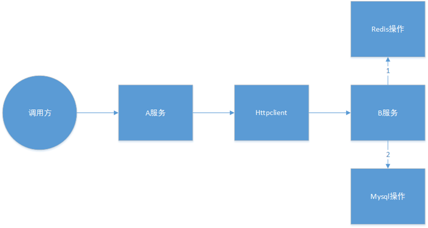
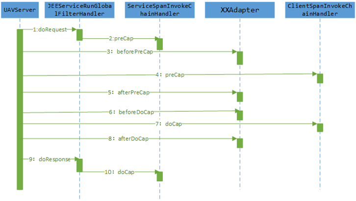
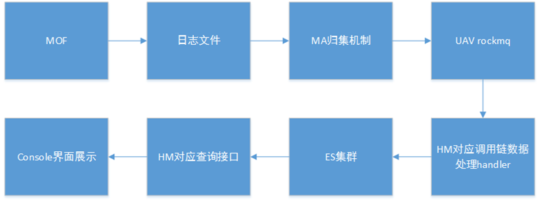
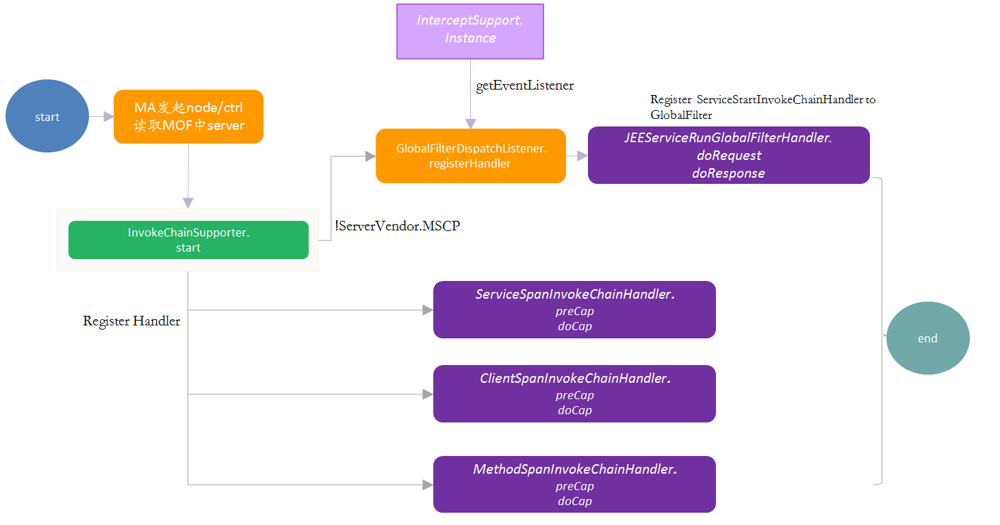

调用链数据生成
调用链是分布式跟踪的领域模型的具体实现。
调用链能够对每一次请求进行记录分析其调用过程。
调用链模型
- 调用链元数据： SpanEndpointType：调用类型（Root(“E”), Service(“S”), Client(“C”), Method(“M”)）； traceId：调用链唯一标识符； spanId：一条调用链中当前节点的调用顺序（与SpanEndpointType 结合唯一）； parentId：一条调用链中当前节点的父调用节点。
调用链绘制规则：
1）调用者（服务、web）最初调用（无父调用）记为开始节点E，并生成唯一调用链ID，traceID；
2）系统内应用组件调用（如httpclient，方法调用等），spanId加末尾数字加1（若为第一个则末尾加.1）；
3）系统间调用（如A服务调用B服务），A服务与B服务span信息只有SpanEndpointType不同（分别对应span的两个端）。
- 举例说明：

- traceId;1;N;E
- traceId;1.1;1;C
- traceId;1.1;1;S
- traceId;1.1.1;1.1;C
- traceId;1.1.2;1.1;C
调用链模型实现

调用链使用UAV的GlobalFilter机制，实现JEEServiceRunGlobalFilterHandler，拦截所有进入tomcat的请求。
抽象三类场景：1，server；2，client；3，method。并创建对应handler。
为了适配所有数据源（如httpclient，mq，jdbc等），在客户端劫持处增添适配器（XXAdapter）。
通过上述机制，最终将调用链信息输出到日志文件，并由MA的归集机制收集。
调用链整体架构

1）通过UAV的内嵌小应用，动态启停调用链；
2）MOF收集调用链信息并输出到指定日志文件；
3）MA的归集机制将日志文件内容上送到UAV的rocketmq中指定topic；
4）HM中的调用链处理handler将rockmq中的调用链数据进行分析处理，放入es中；
5）HM对外提供查询接口，供console进行前端展示。
InvokeChainSupporter启动与实现

SlowOperSupporter启动与实现